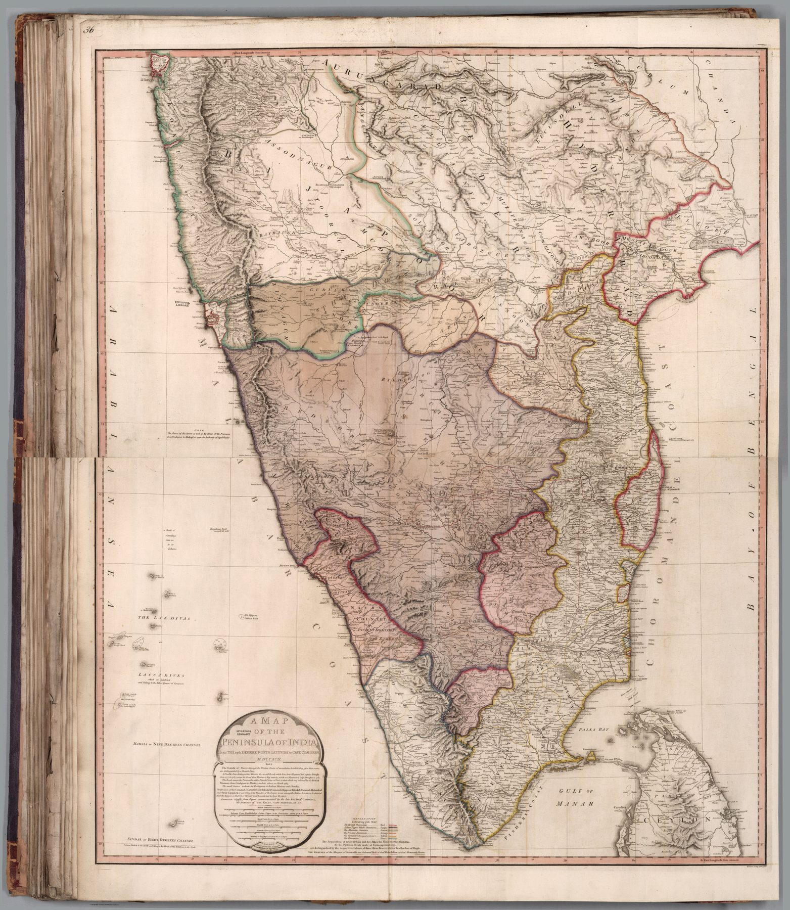

Date, publication and object
The title carries the Roman date 1792; Faden’s imprint states 1 May 1793. The map was engraved by R. Baker on two sheets and depicts the peninsula from 19° north to Cape Comorin at a scale large enough to show roads, settlements, rivers, relief and extensive explanatory notes.
A contested peninsula
The map appeared as the Third Anglo-Mysore War ended. Recent campaigns had generated surveys and route intelligence across southern India, while the resulting settlement altered Company influence over Mysore and its neighbours. It is not a campaign map, but its density and timing belong to the war that had just remade the south.
From general outline to operational ground
Earlier maps made the peninsula one component of ‘India’ or the ‘East Indies’. Faden enlarges it into a working territorial field. Roads and named interior places matter alongside coasts; explanatory notes preserve the provenance and uncertainty of particular observations.
The gaze
Mysore had just been beaten, and Faden had the surveys to show for it. The sheet’s notes record who measured what and how far to trust it, which is new; so is the assumption that a reader in London might want the roads of the interior. Southern India appears here as ground the Company expects to move across.
In the Deccan timeline
Haidar Ali (c. 1720–1782) · Srirangapatna (1610–1799) · The Mysore rocket (1780–1799) · Pollilur, 1780 (10 September 1780) · Tipu Sultan and the Treaty of Mangalore (1782–1784) · Tipu’s state (1784–1799) · The Treaty of Seringapatam (18 March 1792) · Seringapatam, 1799 (4 May 1799)